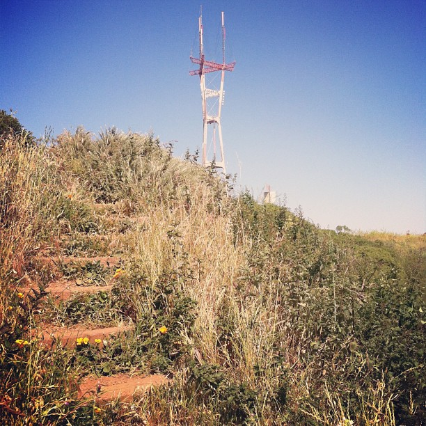
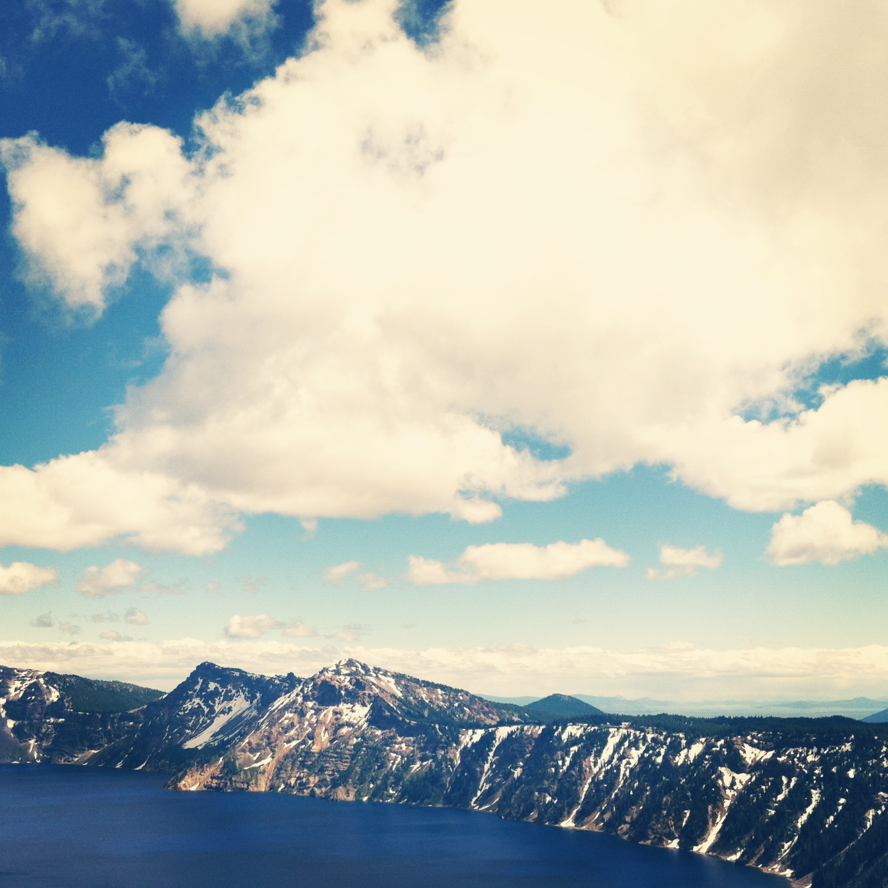
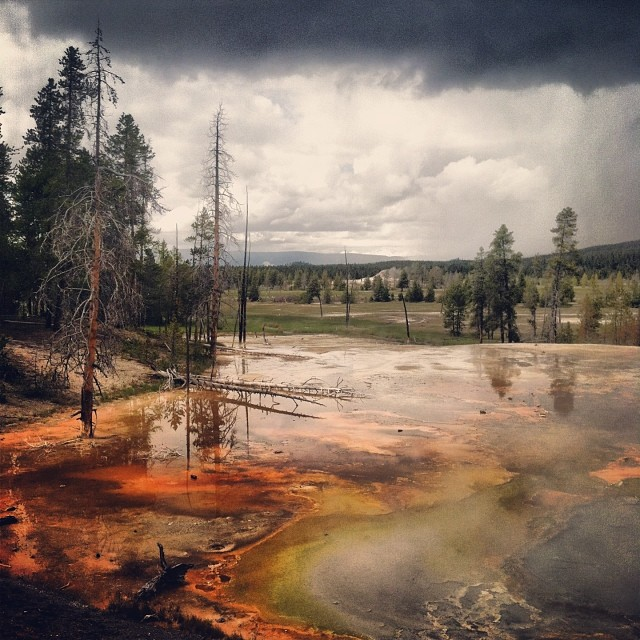
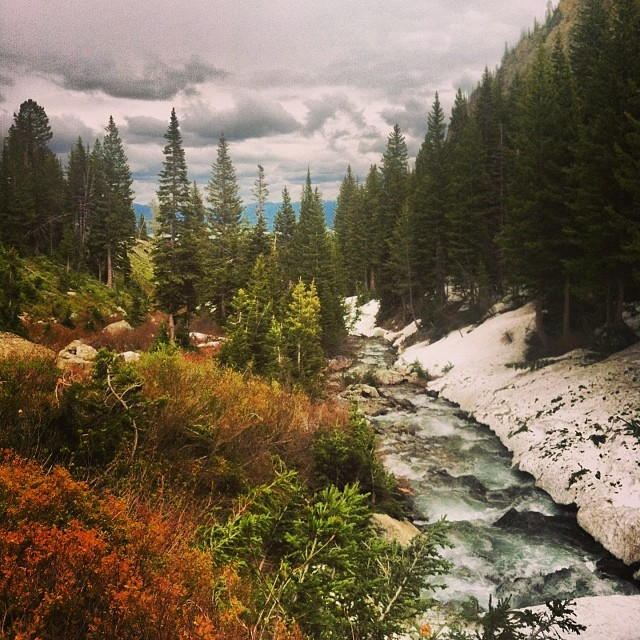

#rainroom
15 Years Old and in the Past
Simone Martini Bar Cafe
A popular bar known for it’s decor and drinks in Manhattan’s East Village closed in December of 2014.
77 DaysOld
Working Hard.
42 Years Old Today
Sutro Tower, San Francisco, California
Sutro Tower is a Bay Area icon and a landmark for the city.
15 YearsOld

@analogmichelle
Morning walk to Twin Peaks!
7,700 Years Old Today
Crater Lake, Oregon
Crater Lake, a deep caldera lake known for its striking blue waters formed due to the collapse of the volcano Mount Mazama thousands of years ago.
42 YearsOld

@analogmichelle
Crater Lake, Oregon. Stunning.
2 Million Years Old Today
Yellowstone National Park
Volcanic activity dates back to 2 million years ago in Yellowstone National Park.
7,700 YearsOld

@analogmichelle
Yellowstone
2 Billion Years Old Today
Grand Teton National Park
Rocks in Grand Teton are some of the oldest found in a US park, dated to 2 billion years old.
2 MillionYears Old

@analogmichelle
Les trois tetons
Years Old